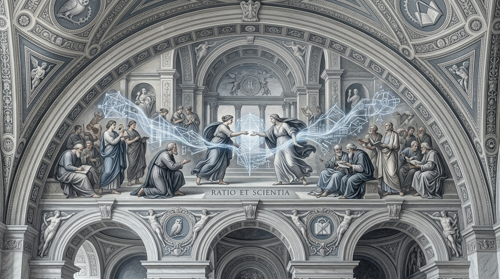

Hypsis
L’IA dans la
transformation industrielle
Le dernier kilomètre de la transformation : de la recommandation à l’outil opérationnel.

Le dernier kilomètre de la transformation : de la recommandation à l’outil opérationnel.
William Le Ferrand — CTO, SOGECLAIR
Cylad Consulting — 13 mai 2026
Panorama IA
Le Deep Learning n’est pas de la programmation classique. On ne code pas des règles : on montre des exemples et le modèle apprend les patterns.
« General methods that leverage computation are ultimately the most effective, and by a large margin. »
Richard Sutton, The Bitter Lesson
Deux règles. Pas de magie. Le modèle apprend ce qu’on lui montre — ni plus, ni moins.
Panorama IA
Une grille simple pour comprendre ce que l’IA sait faire et où elle crée de la valeur dans l’industrie.
< 3 secondes
Détection, classification, OCR. Tout ce qu’un humain fait en un coup d’œil.
Texte, compréhension, génération
Synthèse, analyse, code, diagnostic. C’est la révolution des LLMs.
Ce que l’humain fait mal
Optimisation, planification, simulation sous incertitude.
Le vrai changement : les LLMs ont rendu le System 2 accessible à tous. La majorité des besoins industriels relèvent du System 1 + System 2.
Panorama IA
Avant : un modèle custom par tâche. Coûteux, lent, data scientists requis.
Maintenant : des modèles pré-entraînés qu’on adapte par :
Propriétaire (GPT, Claude) : via API, données dans le cloud.
Open-weight (Llama, Qwen, Mistral) : téléchargeables, exécutables en local.
« Pytorch is your new Linux. »
750 publications CS/jour. 225 nouveaux repos/jour.
| Ce qui coûte cher | Ce qui ne coûte plus cher |
|---|---|
| Entraîner un foundation model (500K-xM$) | Utiliser un foundation model en local (quelques €/jour) |
| Constituer un dataset massif | Adapter un modèle existant à son domaine |
| Recruter des data scientists senior | Déployer une inférence locale (GPU 5-10K€) |
Les modèles open-weight rendent l’IA on-premise viable. J’ai amené une machine qui fait tourner tout ça — on la verra tout à l’heure.
Le pont
Pendant 30 ans, le logiciel d’entreprise a essayé d’encoder la manière dont les entreprises devraient fonctionner : workflows rigides, règles métier codées en dur, cahiers des charges de 200 pages.
L’ERP qui encode « comment on devrait travailler »
Le cahier des charges figé que personne ne relit
Le projet IT de 18 mois dont on ne voit jamais la fin
L’ontologie qui capture « comment on travaille vraiment »
L’app construite en itération avec l’utilisateur
L’outil qui apprend et s’adapte en continu
Les systèmes qui apprennent de la donnée et de l’usage battent les systèmes conçus par des experts. À chaque fois.
Retour d’expérience
SOGECLAIR : groupe familial coté en bourse, deux BUs (engineering et solutions), 1 300 personnes. Forte croissance entre 2000 et 2020.
L’ambition de faire travailler les filiales ensemble. Les outils n’étaient pas au rendez-vous.
J’arrive et je mets en place deux initiatives :
Ce n’est pas un projet IT. C’est un projet de connaissance.
Retour d’expérience
Le travail a une dimension technique (une équipe dédiée de 10 personnes). Mais il a surtout une dimension humaine.
La transformation a été sortie de la DSI. Pas contre la DSI — pour lui donner toute liberté de manœuvre.
Un seul effort de structuration, cinq projets débloqués :
C’est l’effet compounding de l’ontologie : chaque donnée bien structurée rend la suivante moins chère à exploiter.
Retour d’expérience
Le réflexe classique : créer une « agence » centralisée qui produit les rapports pour le groupe. L’agence devient un goulot d’étranglement.
Les rapports eux-mêmes. Les métiers les construisent.
Le principe : « aide-toi et la digit t’aidera. »
La digit donne les rails, les métiers font rouler les trains.
Retour d’expérience
Même méthodologie que pour les fonctions transverses. Chercher les petites opérations qui prennent moins de 3 secondes mais qui sont répétées des centaines de fois. Les automatiser.
Des rapports de non-conformité Dassault en PDF, reçus en volume. Il faut en extraire les données pour les indexer et permettre la recherche d’antécédents — un enjeu qualité majeur en aéronautique.
Fine-tuning d’un modèle fondationnel visuel pour extraire les données de ces documents. C’est du System 1 : le réflexe, la détection, l’extraction.
Pas un chatbot. Pas un assistant. Un outil de production qui fait une chose bien, de manière fiable et mesurable. C’est ça, la « boring AI ». Et ça marche.
Retour d’expérience
Techniquement, tout marche. Mais ça a révélé une difficulté bien plus profonde que la technologie.
La digit et l’IA découplent le lien entre temps et valeur. Or dans une société d’ingénierie, ce lien est le fondement absolu du modèle d’affaire : on vend des heures.
L’automatisation réduit le temps passé sur les tâches. Si ce qu’on facture est lié au temps, alors avec l’automatisation on facture moins.
Introduire l’IA sans repenser la manière de vendre, c’est contre-productif.
C’est le refus de prendre ce virage qui est la raison de mon départ de SOGECLAIR.
Et c’est ce qui m’a poussé à créer Hypsis : une structure dont le modèle économique est nativement aligné avec la valeur produite, pas avec le temps passé.
Cette question du business model va se poser pour chacun de vos clients industriels.
Elle se pose peut-être déjà pour vous.
Démo & échange
La Hypsis Box est sur la table. Tout ce que je vais montrer tourne dessus, en local, sans cloud.
~30 applications en production chez un client industriel. Pas un POC : du réel.
Comment les données de l’entreprise sont structurées. L’effet compounding en action.
Un use case proposé par vous. De la description en français au déploiement.
Question pour lancer l’échange :
« Quand vous faites un diagnostic chez un client industriel, combien de vos recommandations deviennent des outils opérationnels dans les 6 mois ? »
William Le Ferrand · william@hypsis.ai · hypsis.ai